SRM's Entirely Too Long, Too Late, Too Laborious Cogfort Review
I cannot recall the specifics, but when the Cogfort was first revealed, a scant few months ago, I can only imagine I pumped my fist in excitement, only to pump it a second, more forceful time when a variant with a giant flamethrower was revealed. Finally, this massive thing from the background and animations was going to be a physical model on the tabletop. Better yet, it might even be a model in the infamously labor-intensive Cities of Sigmar range, where the effort:points ratio could get my years-in-progress army to a playable level. As one of Tabletop Battles' resident Cities of Sigmar Sickos (the only CSS I understand), I volunteered to review this kit, building and painting it in an unwise amount of time. After all, it took me a month and a half of dedicated hobby time to paint five Freeguild Cavaliers and another month and a half to paint one unit of ten Fusiliers; how bad could it be to paint a Cogfort in two weeks?
The Plan
My first notion was to magnetize this model so I could run either of the main variants, but upon opening the box, I was quickly disabused of that notion. The door for the Conqueror had to be reversed to fit in the belly gun for the Cannonade, and after also gluing the wrought iron fence above that, it would be impossible to swap them around freely. No matter, Cannonade it is. My second notion would be to glue the roof on, closing the model off and saving myself the work of painting the turret interior. Again, I would see my hopes denied. There's an El Camino-esque opening in the back of the turret where several racks of cannonballs go. This system, aside from looking like a bowling ball return system, leads to a wide opening through which one would be able to see inside the turret anyway. Were I to glue the roof on, it would be easy to see inside and look at all the things I didn't paint. Scratch that second idea; I'll be painting the turret interior, too, I guess.
Still, I knew subassemblies would be the way to go with this beast of a kit, and I got to planning those out. Each foot, the body, the turret, the gondola with the engine, the roof, the base, and the six crew members would each be glued to bases (hereafter referred to as "scrap bases") and painted separately. From there, I would glue the legs onto the body, sketch out where those would go on the base, build and paint that base up, then move on to the turret, the crew, and, time permitting, the roof. That way, if time ran out, I could at least have a largely complete fort that would look good on the table. Moving a poster-tacked-together house of cards around on a base the size of a 45 record wasn't my idea of a good time. This would also give me a number of checkpoints while painting. Painting all of this at once would surely be glacial, but by painting each part to completion, I'd get a series of little dopamine hits along the way, doubly so once I could start sticking completed pieces together and envisioning the completed project.
With my plan in place, only two things stood in my way - the twelve days I had to paint this thing, and the frailty of my stupid human body. Again, this can only go well.
The Model Review Portion of This Article
I had the notion of tracking the exact hours spent on this kit, but only bothered to do so for its initial construction. Over the course of five hours, this went from plastic in a cardboard box to a collection of three-dimensional objects, plus another hour or so of masking pieces off with poster tack and figuring out how to mount the pieces for priming. I'm putting the cog before the fort here, though, so let's wind back a bit.
The experience of laying out these six sprues on a table is a genuinely overwhelming one. There are two sets of duplicate sprues (containing the bulk of the legs, part of the body, and some weapons), while the other two sprues make up the crew, decorations, and other pieces you generally don't need repeated. It's a feat of miniatures engineering, and a great use of repeated sprues the likes of which I haven't really encountered since building the Knight Dominus kit. The mold lines are minimal, only really being a problem on the chains, and the details, be they pockmarked metal, knotted wood, or scowling faces, are crisp and clean.
The hull is rather sturdy, though I encountered some gaps that required filling. These big slabs of plastic can sometimes warp a bit, and required some extra-thick plastic glue around the interior seams. Once I'd built the main tower, though, I realized it could stand up on its chains. Those wouldn't do as an area to hold while painting, but they let me stand the model up next to an open window so the plastic glue could off-gas while I built more stuff. Next was the turret, which sits deep in the hull and has its own tab so you can slot it into the body and rotate it securely. The aforementioned bowling ball return is one of the fiddlier parts of the model, with rather small contact points and a mess of overlapping details that will be a pain to paint later. As for the roof, it's got a bunch of windows that should be pushed in until they click; it feels like they'll break, but it's what you've gotta do to fit them in snugly. You'll also need to decide if you want to have the crew member stick their head out the window like they're yelling down at the young boy on the street to go bring a turkey to Bob Cratchit's house. If you do, you'll want to dry fit it with the crew member in place to make sure the window actually opens, and mask off the rivet they attach to for later painting and gluing.
Speaking of the crew, they're honestly like a command squad worth of models in their own right. The turret crewmember potentially holding the window cleverly sits on one of the big rivets in the turret, and the Leadshotter gunner's gun snaps onto its railing, while most of the other models just stand around however. Some of them, like the captain, can have a hand positioned to be on a railing or something, but they're largely just freestanding. The gunner in the little outcropping manning the Leadshotter is my favorite of the crew, only wearing platemail from the waist up on the front but being unarmored in the back. It's a fun little detail, where realistically they would always have their back to the fort itself and wouldn't need extra armor covering their rear. There are loads of head options and a few arm options as well, plus the bodies are compatible with the heads from the bulk of the Cities of Sigmar range. You can really make the crew your own, with male and female options for the captain and plenty of heads and arms to choose from. If you left the crew off like some sort of coward, you could probably eke out a fresh Freeguild Marshal and some variant crew for an Ironweld Great Cannon.
A few of those crew members can be fit into the gondola on the back of the Cogfort, where the engine lives. This little basket is supposed to be able to take off like a hot air balloon should the Cogfort fall, so it's got some sandbags you could glue on if you wanted to. It's the one piece of the kit that felt kinda crummy to assemble, with two halves that didn't really want to line up, bringing to mind the Chinese-manufactured terrain kits from a few years back. Keeping it separate for a subassembly was a trouble since it really has to cram into the back to fit, but since it completely covers the bottom door and a bunch of other details, it's necessary to leave it off.
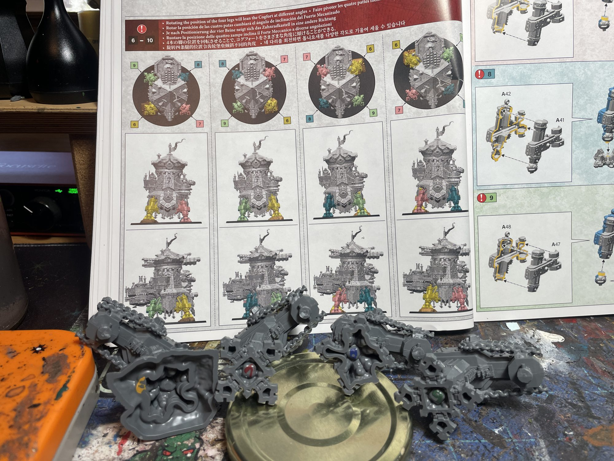
Cogfort leg options. Credit: SRMThe outcroppings with the gunner and the captain can be built in either direction, though the fit can be a little loosey goosey, so reinforce with plastic glue as necessary. There are loads of little pieces for customization throughout. Nearly every gargoyle can be changed or given a different head, extra things like lamps, tools, and so on can be strewn about the model, all the doors can be flipped, and there's genuinely no reason any two Cogforts should ever look the same. Any leftover bits should be great for basing or terrain down the line. This model can even be posed differently, as its feet can be arranged in a number of ways to let the Cogfort lean one way or another, with a helpful diagram illustrating this in the instructions. Like the clever boy I occasionally claim to be, I painted the number of each foot underneath so I could try out a few poses and find something that worked later.
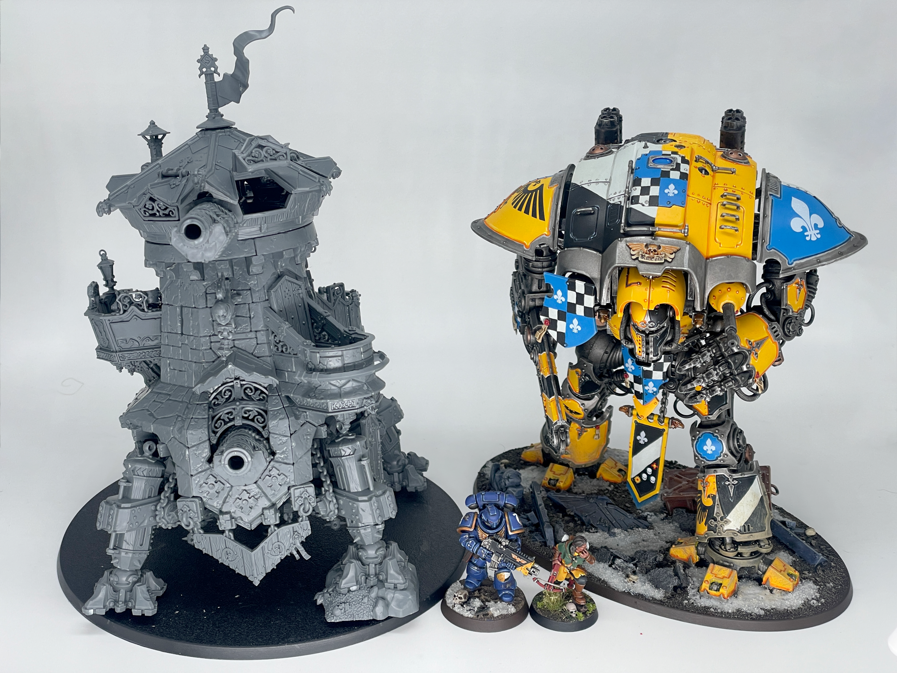
Cogfort size comparison. Credit: SRMLastly, people might be wondering about a scale comparison with this model versus other models. In a vacuum, one can never quite know how large something is. How big do you think a capybara can be? The size of a cat? A raccoon? You'd never know they're larger than a midsized dog and can weigh more than an adult human being from contextless photos of them chilling in ponds. They also like to be poked and roll over like dogs, but we're getting far afield here. Here's a size comparison of the tacked-together Cogfort with an Imperial Knight, Space Marine Intercessor, and Wildercorps Hunter. I probably should have stuck a Stormcast in here too, but they're about the size of a Marine anyway. This is a very large model.
Painting
 Cities of Sigmar Ironweld Great Cannon. Credit: SRM
Cities of Sigmar Ironweld Great Cannon. Credit: SRM
The north star for this project would be my Ironweld Great Cannon. I'd established all the textures I needed to there, and it helps to get those decisions out of the way early. That would mean painting it to match, which meant line highlighting the bulk of the woodgrain.
This would likely prove my undoing.
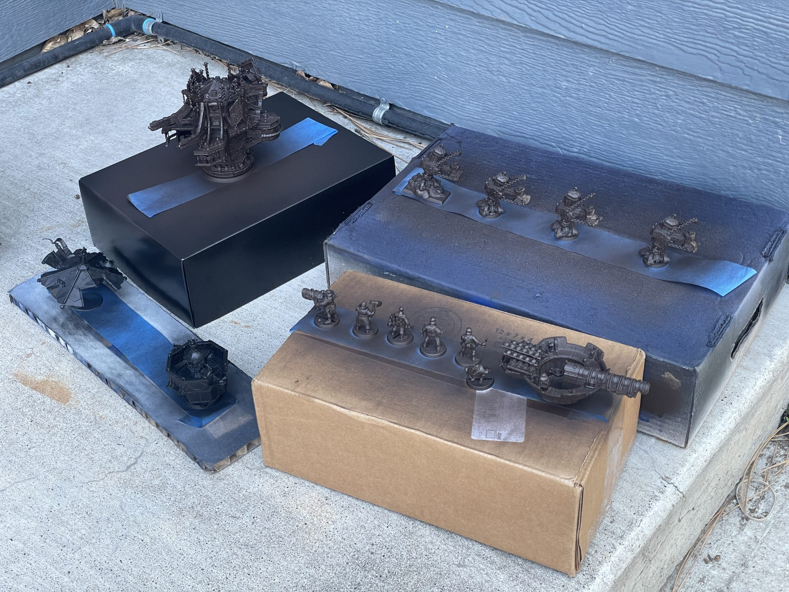
Priming the Cogfort. Credit: SRMThe first step would be priming my subassemblies. This felt very silly, blasting Colour Forge Hinox Brown over all these severed pieces and standalone infantry models. After a day of off-gassing, I'd slather the better part of a pot of thinned Rhinox Hide paint from GW over the various assemblies, covering any spots I'd missed and establishing an even basecoat.
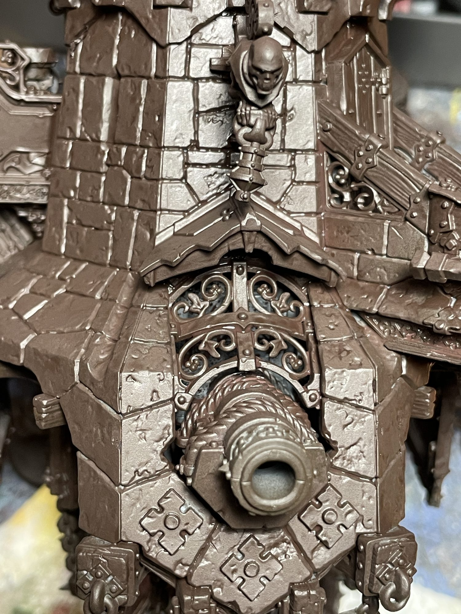
Painting behind this Cogfort fence is impossible. Credit: SRMFun fact: The wrought iron fence over the belly gun is actually impossible to reach through with a paint brush, so unless you want some bare plastic showing through, you'll want to leave that piece off or spray it point-blank and hope for the best. I opted for the latter option after taking this photo.
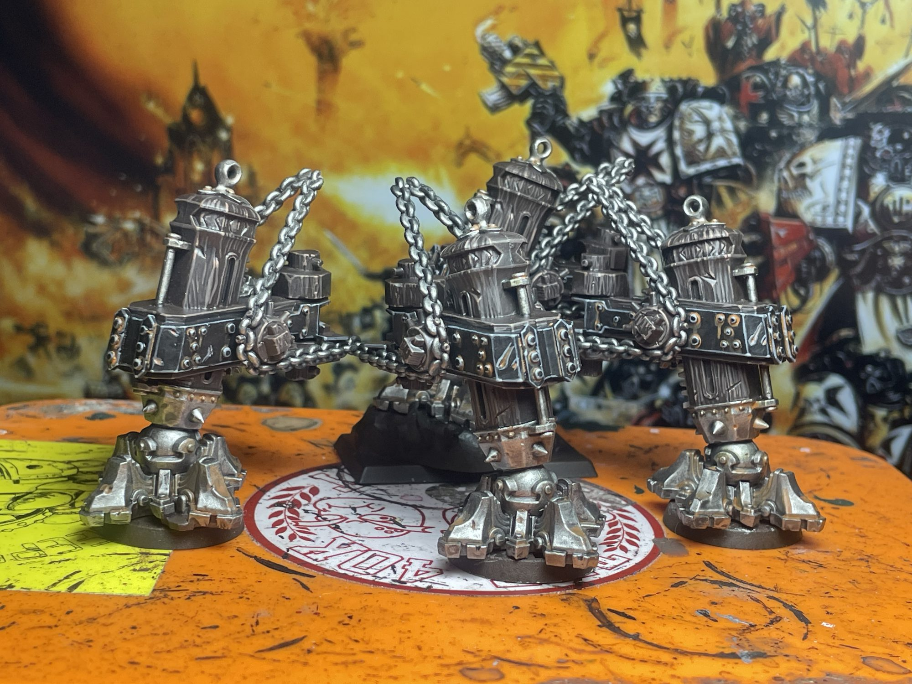
Cogfort Feet Pics. Credit: SRMOver the course of two days, I'd paint the feet, first picking out all the metals with Leadbelcher, then washing the wood with Nuln Oil and splotches of Athonian Camoshade. I drybrushed the wood with Dryad Bark to build up the color a bit, and painted the black metal parts with Steamforged Thamar Black. I ran thinned Skrag Brown into the recesses and around the rivets to build up rust, and Black Templar Contrast paint onto the chains to give them just a bit of differentiation from the main metals. All those metals got a highlight of Pro Acryl Silver, while the black got edge highlights of Mechanicus Standard Grey and spot highlights of Dawnstone. Lastly, I made a mix of 1:1 Dryad Bark and Gorthor Brown and highlighted the wood grain before doing a second highlight in the corners and points with pure Gorthor Brown. This whole process took two days. I felt great. This was marked progress, and I could move on to the next part of the model.
It's rare that I say something is hard to paint. A Land Raider is hard to paint because it's huge and hard to comfortably hold. Cato Sicarius is hard to paint because his details make it difficult to reach a brush into some parts of his model. Freeguild Fusiliers are hard to paint because there's an overabundance of detail. The hull of the Cogfort is all of the above. I glued a 60mm base on the roof to use as a handle, and the grip on my XL painting handle wasn't strong enough to hold it, so the bulk of my time painting the body of this miniature was spent uncomfortably pinching that 60mm base, or with my fingers slotted in where the legs go, hoping they wouldn't rub off any of the paint down there. After a couple hours of this my left wrist would be in rough shape, and I'd be thankful for the general invention of the Citadel Painting Handle whilst cursing it for not working in this particular instance.
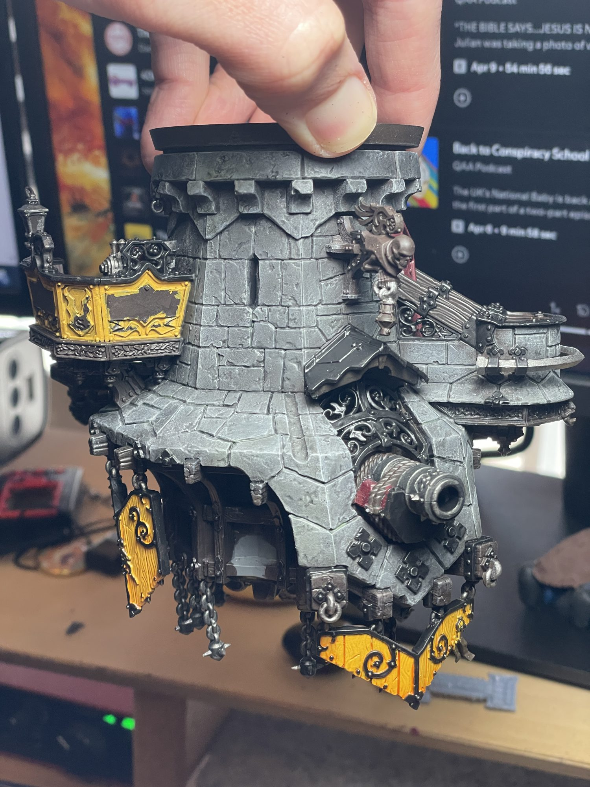
Cogfort WIP. Credit: SRMI started with the messiest part of the hull, which would be the stonework. This takes up most of the front half, and would represent probably the only genuinely sound decision I made after putting paint to plastic: drybrushing the shit out of it. Eshin Grey, Mechanicus Standard Grey, Dawnstone, then a 1:1 wash of Nuln Oil:Agrax Earthshade and some Athonian Camoshade to taste, followed by a second round of Dawnstone and light Grey Seer drybrushes, and it was good to go. I ran some thinned green paint off my wet palette in a few crevices to represent moss and provide more variation. Again, this was a notable mark of progress, and one which kept up that momentum from painting the feet. I dusted off the model after all that drybrush pigment buildup, blocked in the metals, washed all the wood with Nuln Oil and Athonian Camoshade again, then drybrushed said wood Dryad Bark to build it up. I then blocked in the wood around the doors and cannons in Khorne Red and the hanging armor slabs in Averland Sunset, washing them with Agrax Earthshade and Cassandora Yellow, respectively. I picked out all the wrought iron fence details in black. Another hour or so was spent getting rust in place on the metal and black metal details. Unfortunately, that would be it for the easy parts.
An important thing to note is that each decision you make while painting this model is one you will be liable to repeat several times for several hours. That might seem like a given, but when you're deep in the woodgrain highlighting trenches, shakily running your brush over another detail before splodging more paint into another knot of wood, you'll learn to be angry with your past self. Maybe, in time, you'll learn to forgive them, too. The jury's still out in my case.
Day two of highlighting the woodgrain on the Cogfort's hull was spent rehydrating the 1:1 mix of Dryad Bark and Gorthor Brown repeatedly on my wet palette, as the high desert air slowly siphoned all the moisture from the paint. The cold sweat that only overtakes me when I realize I'm going to miss a flight broke out. I didn't think I'd have time to finish this for launch day. While many of my anxieties are baseless and irrational, this one was spot on.
On my third day of highlighting woodgrain, I joined my wife's work for a fundraiser at a beautiful building on the west side of town. For the first hour or so of the event, I was staring at the wood panelling of the walls, utterly lost in the grain of their boards. I had unlocked a new kind of Tetris Effect, only instead of falling blocks on a bathroom stall door, my eyes were following the contours and knots of the planks on the walls around me.
After four days of highlighting woodgrain, I got to move on to the next step of painting the hull: highlighting woodgrain, but in yellow and red now. This passed relatively quickly, sketching out color and giving my eyes something else to focus on before they fully crossed once more. This was much the same as the previous process, but now in full technicolor. Afterwards, I cleaned up the various wood textures with their base colors. Mercifully, this was a much shorter process.
The following day, I proceeded to highlight all the black metal on the hull. There's more wrought-iron fencing on this model than you'd ever find at a Home Depot, and instead of going metallic with it, I painted it black. I weathered it the same as the steel parts, then highlighted it with Mechanicus Standard Grey and Dawnstone. The color variation would also help keep the model visually interesting, something I'd practised across my Cities force. The repeated rivets and plates around the hull weren't too much of a big deal, but the intricate curlicues on the outcroppings and hanging shields took a steady hand and no shortage of patience. On my second day of highlighting these, several thoughts went through my mind. Foremost amongst them was the thought that someday, I would die. With that knowledge, was spending my ninth successive day of painting intricate, repetitive details really worth my limited time on this planet? As someone whose chief form of expression these days is pouring dozens of hours into miniatures to make for the most beautiful armies I can muster, I had to say yes, though that positive conclusion was harder to reach when my wet palette turned dry palette, and my highlights became increasingly ragged. An unusually dry winter led to an unusually dry spring, and I'm sure it'll mean an unusually flammable summer, but fire season was tomorrow's problem; today's problem was on my desk.
I missed the deadline for the Cogfort review. Fortunately, Soggy's fort was ready, and we still put out a lovely article for it, but my own half-baked Cogfort required far more time in the oven, slow and low like a rack of ribs. A new deadline loomed: I was to leave the country on the 26th, some ten days after that review went up. Had I made enough progress? Would I have time with the crunch of videos I'd need to queue up for my absence? Well, read on, we're only halfway there.
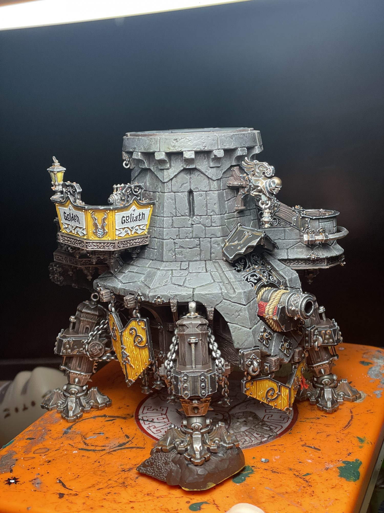
Cogfort WIP. Credit: SRMThe next day, I cleaned up the black highlights, painted the white and yellow metal of the captain's balcony, highlighted all the silver, and applied transfers to the hull, christening this Cogfort as Golden Goliath. I realized that most of the pegs sticking out of the various connection points on the model were probably meant to be wooden dowels and not metal nails, but they were already silver, and I wasn't going back. The square nails on the floorboards and stairs all got picked out in silver as well; I wasn't going to paint them in more detail than that. My childhood home, a positively ancient New England farmhouse, had big square nails like those, the likes of which would constantly catch your socks or stub your toes when they inevitably popped up. With this, the hull, and the greatest single hurdle in this entire project, was complete.
I shaved down the connection points where the legs and body would join, and one by one, glued each leg on. Afterwards, I touched up the bare plastic around said connection points with black and brown paint. It wouldn't be particularly pretty in the Cogfort's fortified grundle, but between the dangling chains and the basing I was planning on, it likely would remain unseen.
Basing
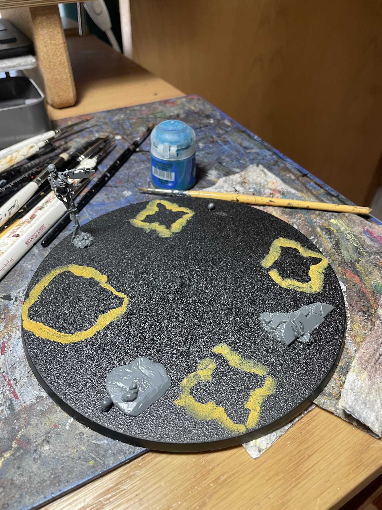
Outlining the Cogfort's footprints. Credit: SRMI situated the assembled fort on its positively gargantuan base and outlined where the feet went with yellow paint like bodies at a crime scene. A few rocks from the Drop Pod kit, a skeleton on a stick from the old Giant kit, a stray Gargoylian from the Gallants, a few skulls, and a leftover helmet from the Freeguild Marshal would make up the decoration on there. Much as I would have liked something more diorama-esque, this project was already taking too long, and would take much longer. I spread thinned PVA glue over the whole thing, avoiding those footprints, covering it with a mix of basing ballasts, then masked off the footprints with poster tack. After a quick spray of Hinox Brown primer, it was time to rock through one of the less labor-intensive parts of this entire project. Drybrushing that personal pan pizza of a base went quickly, and I painted the various bits and bobs I'd glued down as best I could. The skeleton signpost could have been a subassembly of its own, as angling a brush to hit the details on it was tricky, but my box of subassemblies was already fit to bursting. Loose basecoats, quick washes and highlights with the colors left on my wet palette got all these done, and a quickly scribbled "REPENT" on the sign completed the scene. I started gluing down tufts and clump foliage towards the center of the base, as it would be hard to reach once a Cogfort was occupying that space. I should have glued a field of static grass there as well, as actually covering this much surface area took more material than anticipated.
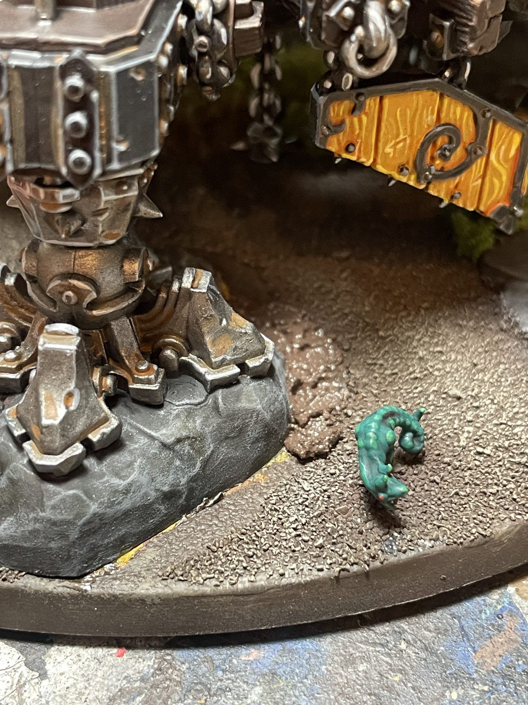
Blending the Cogfort feet into the base. Credit: SRMAfter the center was suitably lush, I glued the Cogfort down onto its dedicated footprints and blended those areas in with texture paint. Actually using texture paint for the whole base would have easily churned through two or three pots of the stuff, but it's perfect for things like this. I kept gluing down more and more tufts, flowers, clump foliage, and static grass around the base until said texture paint dried, at which point I drybrushed it and glued more stuff over it. This transition from the prior day's fine detail work to something more akin to arts and crafts highlights just how much of an undertaking a model like this can be, completely changing the method in which you engage with each part of the model. I used the word "project" earlier, and I can't think of a more appropriate way to refer to this plastic albatross.
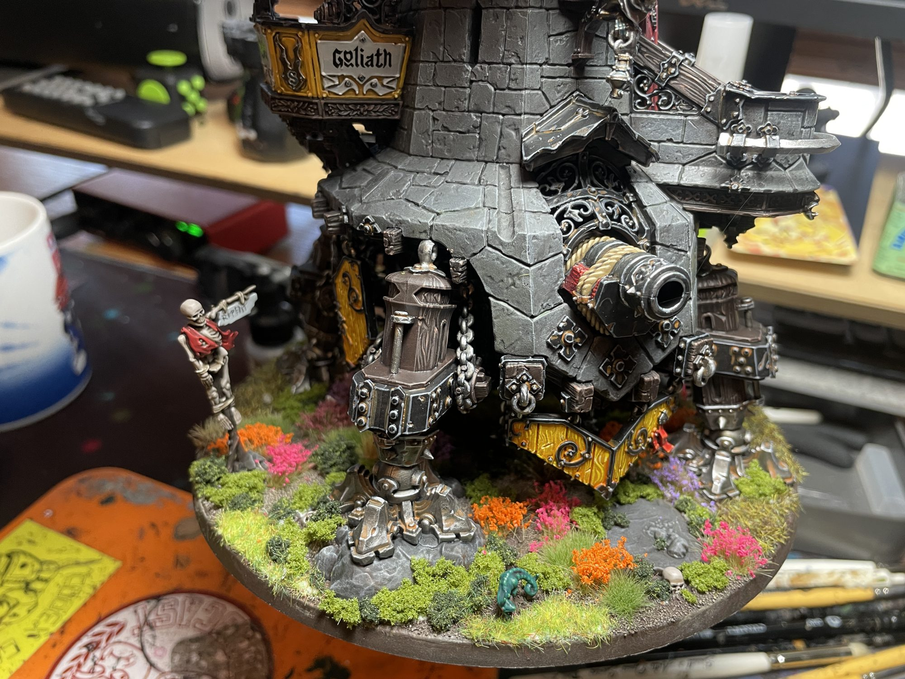
Cogfort Basing. Credit: SRMWith the basing dry and the model finally standing on its own, the Cogfort was starting to look like a real model and not just a collection of laboriously painted loose parts. The next pieces to go would be the metal balloon gondola that sits on the back of the model and the turret, which would go atop it all. The crew would linger, the carrot at the end of an endlessly highlighted stick after the tedium of grinding through all these mechanical and architectural details.
Painting, Again
I'd begin with the gondola and the turret next, laying down basecoats concurrently and then focusing on the gondola before moving onto the turret proper. This in-progress machine was ready enough for a test game where my incomplete Cogfort still managed to rip through a reinforced brick of Chaos Warriors and a bushel of Chosen before the Slaves to Darkness National Demolition Association tore it down. Naturally, one can only assume my giant plastic daughter would have performed better had it been complete, but I guess we'll never know.
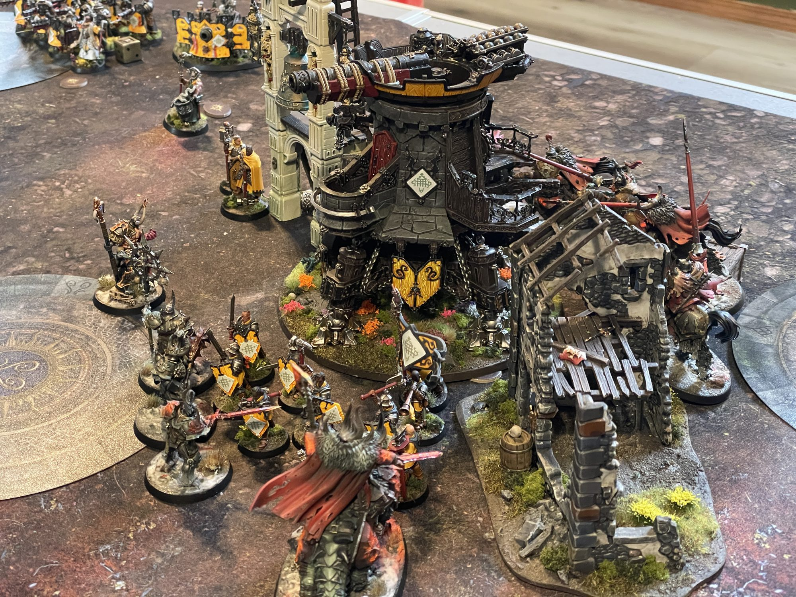
A WIP Cogfort, moments before getting destroyed. Credit: SRMTime gets a little wonky here, as my days melted into a viscous fondue of video production and trip preparation. 11th Edition 40k was dropping imminently, and naturally, I'd be out of town for the day that all our early coverage was supposed to go out. While I was making some progress on the fort, the end of May was mostly cramming to get some videos out and double-checking my packing list. I wrote out a detailed checklist of things I still had to do on the Cogfort for when I returned, then boarded a plane for Japan, where I'd be able to think about things that weren't Cogforts for a week and a half.
I'll gush more about Japan at a later time - possibly in some content for this website down the line - but if you really want to hear more about that trip, I certainly said some words on my podcast about it. After returning and taking a day or two to readjust to my home timezone, it was back to work, picking up the notes I'd left and reacquainting myself with this looming project.
While the rear engine compartment/balloon gondola wasn't particularly exciting to paint, it did at least go by quickly. I listened to a podcast about an ill-fated Arctic balloon expedition to get me in the mood. It was primed black, unlike the bulk of the model, and was just my standard metal recipe for maybe 90% of it. Leadbelcher, Nuln Oil, thinned Skrag Brown in the recesses, and silver highlights did the job. The ropes that bound it were extremely well defined on the exterior and uncommonly mushy around the central engine, but if anywhere on the model is going to have soft details, it may as well be this small element at the back of the model, where nobody's going to look too closely. I slapped some of the green engineer guild transfers on the white fields on its sides, not knowing what they meant, but with the goal of tying into the greenery of the base and my secondary spot color on most infantry models. I left off the sandbags and oil can, which the instructions called for, as it was a rare opportunity to actually save some time and avoid extraneous detail.
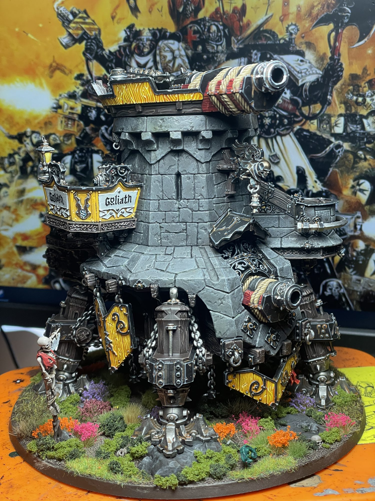
Cogfort WIP. Credit: SRMThe turret was like painting the hull in microcosm: yet more wood grain, yet more wrought iron, and yet more woodgrain, but in other colors this time. Most of it was pretty pleasant to paint; it fit comfortably atop my painting handle, but two elements gave me some issues. First, the bowling ball return of cannonballs. Painting the ammunition wasn't a big deal, and it let me have some fun painting little gemstones on the magic rounds, but getting a brush under and around those racks was a pain in the butt. Since it was all just metal with a wash and rust weathering, though, that wasn't too much of a headache. The second, bigger problem was the pit around the cannon's breech. As I locked back into my standard woodgrain death march, I realized that not only would people seldom see the walls of this pit because the eventual plan was to put the roof on top of this stupid thing, but even if I did leave the roof off, there was going to be a crew member taking up most of this space anyway. I'd already committed to the grain at this point, so I finished that out on the walls, leaving the floor with a simple drybrush. My paintwork was getting a bit sloppy here, and my brush's point was getting progressively more fat and haggard. In this Dickensian vision of my own future physique, should I not change course, I quietly ruled out the idea of painting a Conqueror Cogfort to call this one its buddy. I'll tell Golden Goliath that there's nothing wrong with being an only child.
A rare moment of elation struck as I shaved down and glued on the gondola. With a snugly satisfying fit, it was secured. I snapped the turret off its scrap base, only to find the tab was too fat to fit into the turret housing now that both had paint and primer on them. I cut it off rather than take the risk of breaking something trying to lock it in. Golden Goliath now stood largely complete - certainly better than "good enough" and visually imposing to boot. These moments, where you can fit the pieces together and envision what the final model will look like, are crucial to actually finishing any subassembly-heavy project; the imagination fills in the gaps, like when you were playing with toys as a kid. However, the task was not quite finished.
The Crew
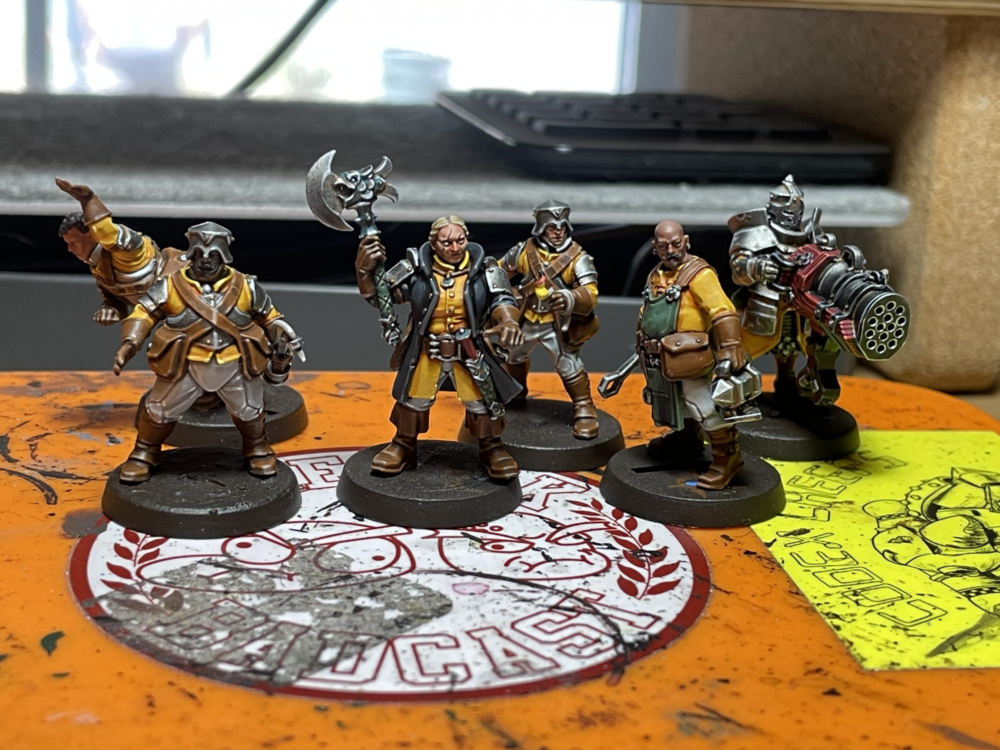
Cogfort crew. Credit: SRMPainting the crew was, in short, a pleasure. After over a month of holding big, chunky pieces at wrist-straining angles, this was back to my bread and butter: painting normal dudes. The six crew members came together quickly. I followed my own tutorial for how to paint them, and it turns out Cities of Sigmar models are pretty simple when they don't have big shields bedecked in wrought iron or overly detailed banners to get lost in. If you've painted any models from this range, painting the crew will be easy enough, as even their somewhat less-uniform appearance still maps neatly onto any given color scheme you're working with. They came together over a couple of days, a comfortable process where I could enjoy their simplicity and character.
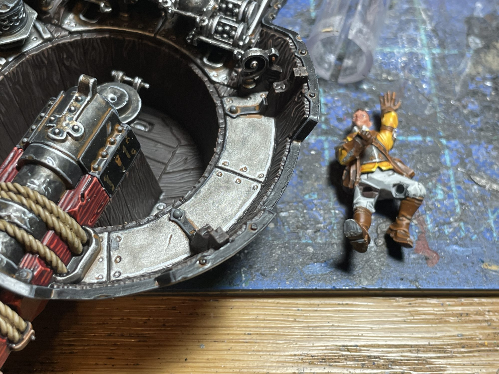
Cogfort crew assembly. Credit: SRMWith the crew done, it was time to attach them to the model. This involved first snapping the models off their scrap bases, shaving down the glue joins where they had been attached, then finding where they'd go on the Cogfort proper. Of course, I'd sketched this out early, posing them to go into specific places, but that was over a month ago at this point, and that information had completely been jettisoned from my memory, likely replaced with the elementary school Japanese I'd needed to retain in my recent travels. For the most part, this would involve placing the model down, eyeballing where its feet fit, and carefully scraping that paint off the Cogfort with a knife, but in some tighter spaces, I'd put wet paint on the model's feet, stick them down, and use that imprint as a guide for where to scrape off the paint. One by one, I plastic-glued them down, mostly because I wanted to avoid the mess of pinning. With each crew member in place, there was one piece to go: the roof.
Final Details
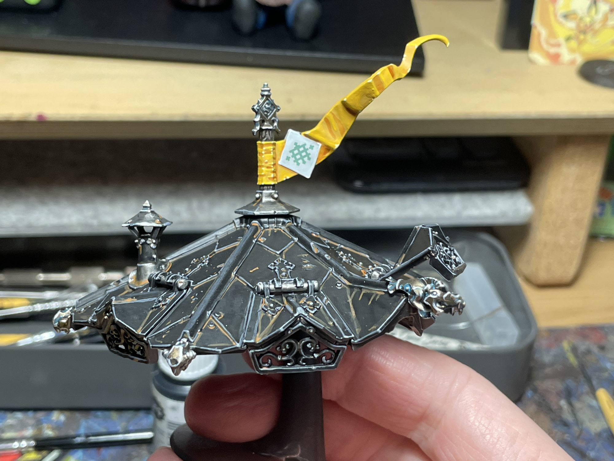
Cogfort roof. Credit: SRMI'd hemmed and hawed on whether to even include the roof - after all, if I was going through the not inconsiderable effort of painting the interior of the turret, I may as well just leave it open all the time. It was even relegated to stretch goal status when I erroneously thought I could paint this in time for that actually timely review. Still, it was part of my initial slew of subassemblies, and if I didn't paint it now, I never would. Once this devil was sealed away with matte varnish, there was little chance I'd summon it again. I somewhat lazily bashed out the roof and its simple banner over two afternoons, the yellow from the crew still active on my wet palette. It was one last pass at painting that hateful wood grain and wrought iron combo again, focused mostly on the windows. This time, I even got to cut a few corners, as I doubt many people are going to look at the underside of the roof. If you ever do and complain that it's not sufficiently painted, I will drive to the closest game store, purchase a brick of 36 16mm Chessex dice and force you to eat them, one at a time, until none remain.
As I was about to varnish the model, I realized I'd forgotten to paint the base rim, so after three passes of black and a few minutes to dry, out it went. Painting the base rim usually feels like a victory lap, but this time it just felt like One More Damn Thing. I updated my hobby tracking spreadsheet, had a sensible chuckle that this was the 69th model I'd painted this year, and let it off-gas until I could eventually take photos. If you've ever stuck your head in a lightbox less than an hour after varnishing something, it's a great way to fumigate any remaining brain cells directly out of your skull.
Did I Learn Anything from This Ordeal?
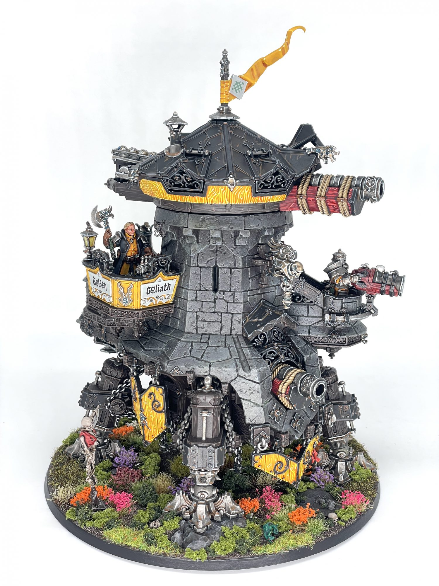
Cities of Sigmar Cannonade Cogfort. Credit: SRMSo that's it. 44 days after opening the box, we're done. The Cannonade Cogfort, Golden Goliath, is complete, and I don't need to think about painting it ever again. It's too big to fit into any of my army cases and will be a model largely reserved for home games for the foreseeable future.
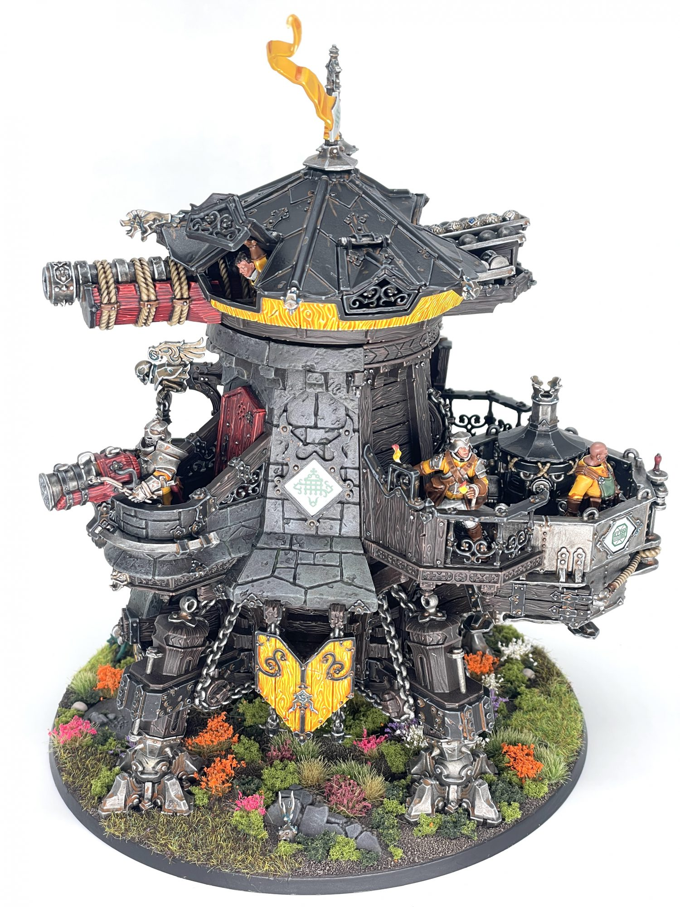
Cities of Sigmar Cannonade Cogfort. Credit: SRMI can't say for sure if this is the best model I've ever painted, but it's undoubtedly the most model I've ever painted. I'm no stranger to going hard, maximizing effort for minimal return, but this definitely felt like the breaking point of that particular ethos. Having this self-inflicted wound festering on my desk for a month and a half has kept me from thinking about the new edition of 40k almost entirely, save for the odd article or video, and that's supposed to be my primary game. Asking whether or not this whole project was worth it almost feels unnecessary at this point. It certainly would be worth the $210 asking price if one were so clinical as to measure hours worked to dollars spent, but what would one even gain from that calculus?
Now were I to offer words of advice, warning, or whatever you'd like to call them, dear reader, let me do so now. Heed them or not, just don't come crawling back to my comments section when your extensor tendon snaps after your eighth consecutive hour of highlighting this fucking thing. I'll number them to give your eyes something more digestible than another paragraph-shaped wall.
- Make a plan. This isn't a model you can casually pick up and just start building and painting, not without significant agida. Plan out how you'll work through this model before starting.
- Work in subassemblies. You don't need to go quite as wet and wild as I did, but leaving off the crew, at a minimum, is going to be necessary to paint this cleanly and comfortably.
- Find out where you can save time. In a project this large, any time-saving techniques will have compounding positive effects as you work through it. Conversely, any time-consuming techniques will snowball similarly.
- Pace yourself. Having little goals you can hit along the process will keep your motivation stronger. Each subassembly completed was like passing another mile marker on a lengthy trail, giving a measurable sign of progress. If you try to hit every single element a little bit at a time instead, you'll probably burn out.
- Have fun with the base. I wish I had painted the skeleton separately, but having a simple nature diorama in the middle of this whole project was a welcome relief and a fun canvas for expression. No matter what your army's theme is, you absolutely should find a way to incorporate some interesting elements into this hubcap of a base, if only to change up your own working rhythm.
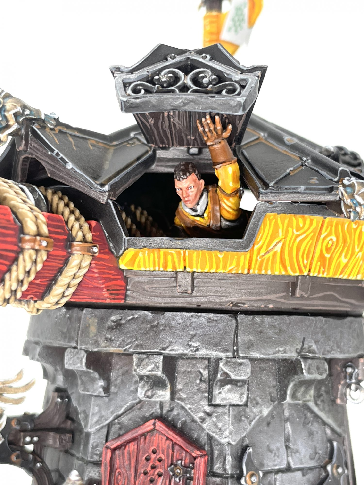
Cities of Sigmar Cannonade Cogfort. Credit: SRMNow for the final verdict, the digestif this overstuffed review should probably end with. Do I recommend you buy a Cogfort? It's currently sold out online, so clearly, Games Workshop doesn't need my help selling this thing. If the past 6000 words haven't put you off, then yeah, you probably should get one of these things. It's like painting an Imperial Knight, a piece of terrain, and a command squad all together, and if that doesn't send you towards the door, then congratulations, you're built for the Cogfort Lifestyle. My grousing aside, I do think it's a genuinely incredible model, and it's exactly the centerpiece this already gorgeous range was missing. I'm proud of the result and hope it'll find its way towards the table frequently in the coming years, but I'd be hard-pressed to want a second one. An undertaking like this one is more a journey of self-discovery than one of mere collector's acquisition, and those discoveries might not all be comfortable. The "Gotta Catch 'em All" impulse of collecting the whole Cities range is a strong one, but I know I'd be condemning myself to paint a second Conqueror variant to the same exacting, maximum-effort standard as this one. I understand that's firmly my problem, however, and if you follow my advice here - something I could never do - maybe a few Cogforts can be in your future.
Have any questions or feedback? Drop us a note in the comments below or email us at contact@tabletopbattles.com. Want articles like this linked in your inbox every Monday morning? Sign up for our newsletter. And don't forget that you can support us on Patreon for backer rewards like early video content, Administratum access, an ad-free experience on our website, and subscriber-only content covering competitive Warhammer 40K!Originally published on Goonhammer.


{kind=link}
{kind=link}
{kind=link}
{kind=link}
{kind=link}
{kind=link}
{kind=link}
{kind=link}
{kind=link}
{kind=link}
{kind=link}
{kind=link}
{kind=link}
{kind=link}
{kind=link}
{kind=link}
{kind=link}
{kind=link}
Leave a Comment